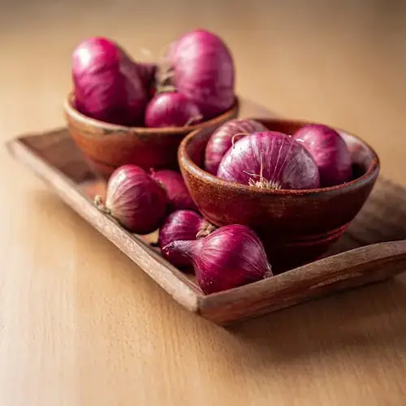
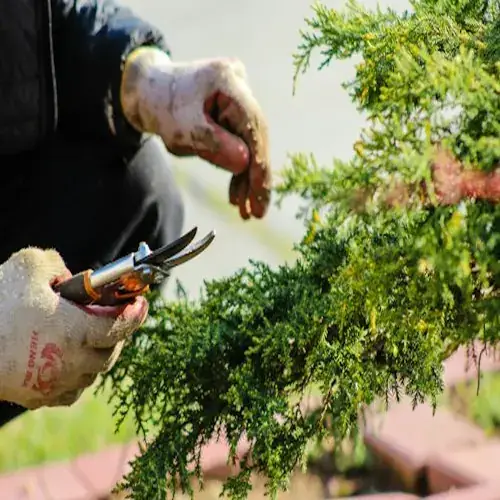

Marketplace Highlights
Featured Agricultural Products
Top-rated farming supplies, biological soil nutrients, and tools chosen by commercial farms and homesteaders.

Sale -22%

Organic

Popular
Top Rated